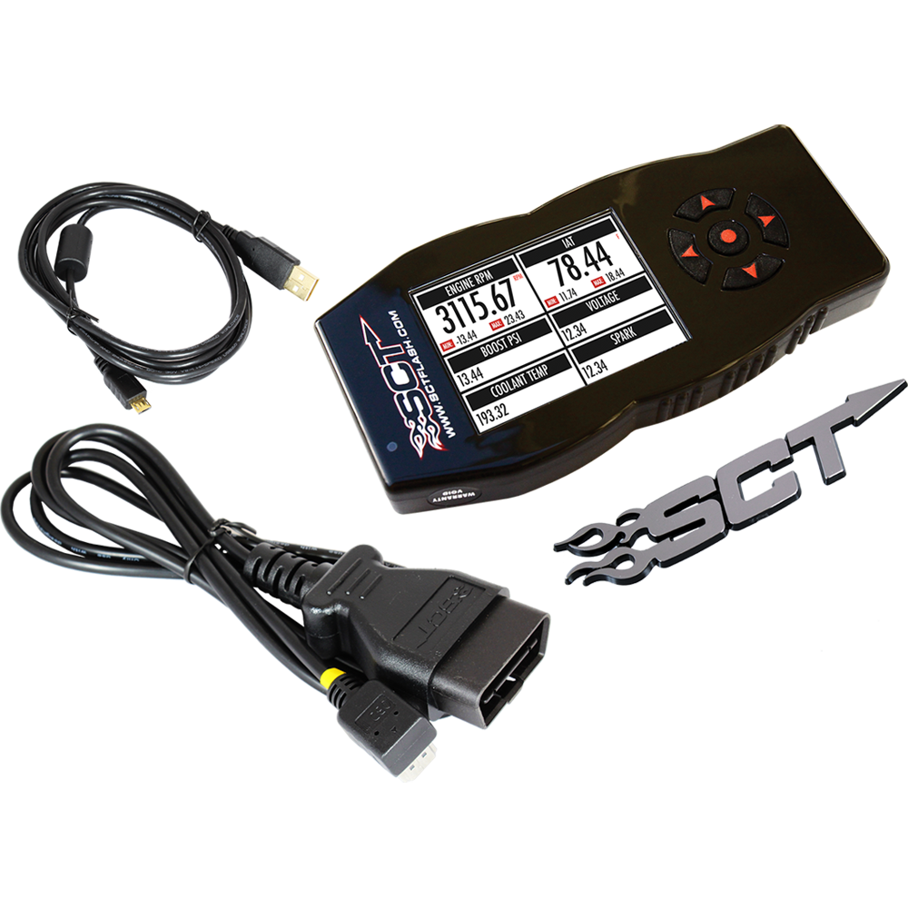

X4 PERFORMANCE PROGRAMMER
$399The X4 Power Flash arrives Pre-Loaded with DYNO Proven tune files that INCREASE HORSEPOWER and TORQUE! This product does not support any changes to your vehicle's emission system.
ADD TO CART
The X4 Power Flash arrives Pre-Loaded with DYNO Proven tune files that INCREASE HORSEPOWER and TORQUE! This product does not support any changes to your vehicle's emission system
| Feature | Description |
|---|---|
| Built-In Wifi | Allows you to easily attach to your local area wireless network to download device updates. |
| Clearing DTCs | Reads & Clears PCM Diagnostic Trouble Codes. |
| Data Logging | Need to monitor your vehicle's engine parameters? No need for a separate monitoring device. View & record your vehicle's PCM data on the device or on a PC |
| Dual Analog Inputs | Monitor EGT temps, air-fuel ratio and other popular sensor data. |
| Easy Restoration Back to Stock | The device backs up your factory PCM program during installation should you ever need to return your vehicle to the stock program. Restoring your vehicle to the stock PCM program is as easy as selecting "Return to Stock" from the device menu. |
| Increases Horsepower & Torque! | Increases your vehicles Horsepower, Torque, Throttle Response and even Fuel Mileage |
| Installs Quickly & Easily | Installs quickly & easily via your vehicle's OBDII port. |
| Most Popular Vehicles Supported | Most popular Ford vehicles supported including 2014 models. |
| Stores 10 Custom Tunes | Stores up to 10 custom tune files created by your local SCT Custom Tuning Dealer. |
| USB Interface Cable Included | USB Interface Cable & Livelink Datalogging software included. |
| User Adjustable Vehicle Parameters | Adjust for common performance bolt-ons such as Cold Air Kits, Exhaust Systems & Gears |
| Option | Description |
|---|---|
| Axle Ratio | Correct the vehicle speedometer (and fuel efficiency calculations) if you have changed the gear ratio on your vehicle. If no gear ration modifications have been made to the vehicle, then choose the stock setting when the tuner prompts you to choose a gear ratio. This will ensure that no modifications are made to the stock program. |
| Global Spark | Allows addition or removal of timing across all RPM ranges |
| Headers | Allows adjustment for Longtube headers |
| Idle Adjust | Enable and select a value for Engine Idle position. This is a great feature for keeping voltage in the vehicle up while running auxiliary electronics off of the vehicle’s power system. |
| Rev Limiter | Regulate the highest RPM that an engine can reach before the engine is electronically limited. Increasing the RPM limit is recommended only for racing purposes. Once of the most important ways to protect your engine from damage is to keep the RPMs from going too high. |
| Speed Limiter | Change the top speed that the vehicle will reach before the engine automatically limits the power needed to go faster. |
| Throttle Body | Compensates for aftermarket Throttle Bodies (BBK 65/85/90 MM) |
| Tire Size | Correct the speedometer if you have changed your tire size from stock. |